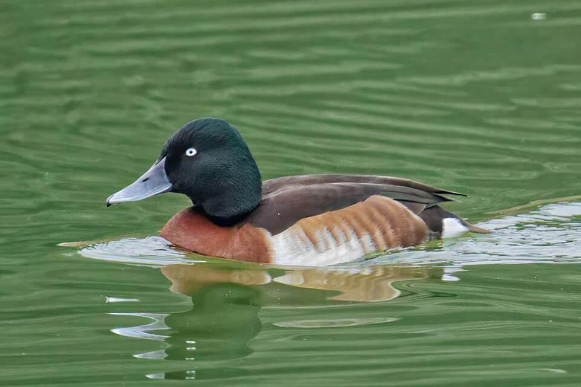

アカハジロ
赤羽白 ／ Aythya baeri
特徴・生態
深い暗緑色の光沢を持つ頭と、オスの透き通るような白い虹彩（白目）、脇腹の白い模様が特徴の潜水が上手なカモです。世界的な生息数が極めて少なく、絶滅危惧IA類（CR）に指定されています。
大濠公園との関わり
日本への飛来数自体が非常に少ない希少種ですが、福岡市内の自然調査において大濠公園およびその周辺水系で貴重な記録が残されています。冬に訪れるホシハジロなどの群れにひっそりと紛れて姿を見せます。

深い暗緑色の光沢を持つ頭と、オスの透き通るような白い虹彩（白目）、脇腹の白い模様が特徴の潜水が上手なカモです。世界的な生息数が極めて少なく、絶滅危惧IA類（CR）に指定されています。
日本への飛来数自体が非常に少ない希少種ですが、福岡市内の自然調査において大濠公園およびその周辺水系で貴重な記録が残されています。冬に訪れるホシハジロなどの群れにひっそりと紛れて姿を見せます。